Les événements saillants des dernières 24 heures — ce que les Unes des grands médias imposent à l'attention, mesuré en continu.
Événements et objets du Hot 20 sont classés par le même indice de saillance : les minutes passées en Une, article par article, média par média — visibilité (combien de médias), intensité (combien d'articles) et durée (combien de temps en Une). Méthodologie →